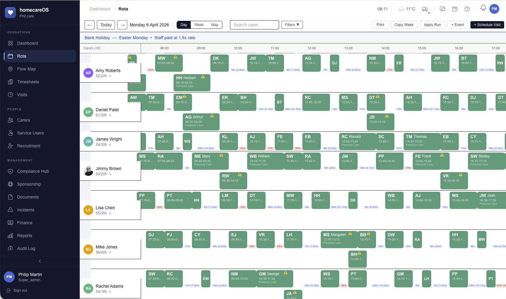

AI That Builds Your Perfect Rota
Intelligent scheduling that considers distance, continuity of care, qualifications and service user preferences — so you can stop spending hours on what AI does in seconds.
What Takes You Hours, AI Does in Seconds
The homecareOS AI Rota Builder analyses every variable simultaneously — travel distance, carer continuity, contracted hours, qualifications, gender preferences, and service user choices — to generate a complete, optimised rota that would take a coordinator hours to build manually. It doesn't just fill slots. It finds the best possible match for every single visit.

How AI Transforms Your Scheduling
Six weighted factors work together to produce a rota that is faster, fairer and more efficient than anything built by hand.
Distance Optimisation (30%)
Minimises travel time and mileage costs by matching carers to nearby service users first. Less time on the road means more time delivering care — and lower fuel bills for your agency.
Continuity Scoring (25%)
Prioritises familiar carers for each service user. Continuity of care improves outcomes, builds trust and reduces anxiety — the AI tracks visit history and maximises familiar pairings.
Hours Headroom (20%)
Respects contracted hours and prevents overtime before it happens. The AI balances workload across your team, keeping carers within their agreed hours and your payroll under control.
Preferred Carer Matching (15%)
Honours service user preferences automatically. If a service user has chosen preferred carers, the AI weights those matches higher — delivering person-centred scheduling at scale.
Schedule Fit (10%)
Avoids unrealistic gaps and rush periods between visits. The AI ensures carers have sensible travel windows and aren't scheduled back-to-back across distant postcodes.
One-Click Generation
Builds a complete week's rota in under 60 seconds. One click replaces hours of manual scheduling — freeing coordinators to focus on care quality, not spreadsheet wrangling.
Under the Hood
The AI Rota Builder is powered by a sophisticated optimisation engine that handles the complexity coordinators shouldn't have to.
Multi-variable optimisation engine
Balances all six weighted factors simultaneously to find the best possible rota.
Qualification and skill matching
Only assigns carers who hold the right qualifications for each visit's care needs.
Working Time Directive compliance
Automatically enforces rest periods, maximum hours and break requirements.
Gender preference handling
Respects service user requests for male or female carers without manual filtering.
Continuity of care scoring
Tracks historical visit data to maximise familiar carer-service user pairings.
Real-time constraint checking
Validates every allocation against live availability, leave records and existing commitments.
Manual override and adjustment
AI builds the rota, but you stay in control. Drag, drop and override any allocation.
Scenario comparison mode
Generate multiple rota options and compare them side-by-side before committing.
Holiday period adaptation
Automatically adjusts for bank holidays, school holidays and seasonal staff availability.
Learning from manual adjustments
The engine improves over time by analysing how coordinators modify AI-generated rotas.
Runs as Supabase Edge Function
Serverless execution means fast results, automatic scaling and zero infrastructure to manage.
Available on Pro AI Rota tier
Unlock the AI Rota Builder as part of the Pro AI Rota plan or the Pro Bundle.
Manual vs AI Rota Building
See what changes when you stop building rotas by hand and let AI handle the complexity.
Manual Scheduling
- Takes 4–6 hours per week Coordinators spend entire mornings juggling spreadsheets, availability lists and phone calls.
- Misses optimal matches Human schedulers can only consider a few variables at once — better pairings are left undiscovered.
- Creates unnecessary travel Without route optimisation, carers criss-cross postcodes wasting time and fuel.
- Relies on coordinator memory Preferences, restrictions and history live in one person's head — a single point of failure.
AI Rota Builder
- Complete rota in 60 seconds One click generates an entire week's schedule, fully optimised and ready to review.
- Optimal matching every time The AI evaluates every possible carer-visit combination across six weighted factors simultaneously.
- Minimised travel and mileage Distance optimisation (30% weighting) ensures carers spend their time caring, not driving.
- Considers all variables Continuity, preferences, qualifications, hours, gender — nothing is forgotten or overlooked.
Ready to Let AI Handle Your Rota?
See the AI Rota Builder in action. Book a personalised demo and discover how much time your coordinators could save every single week.